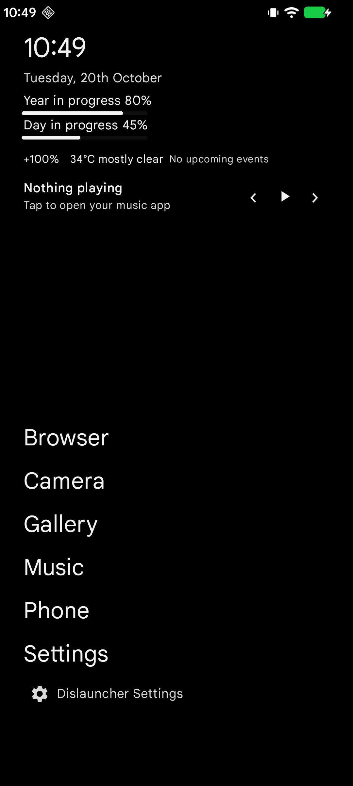
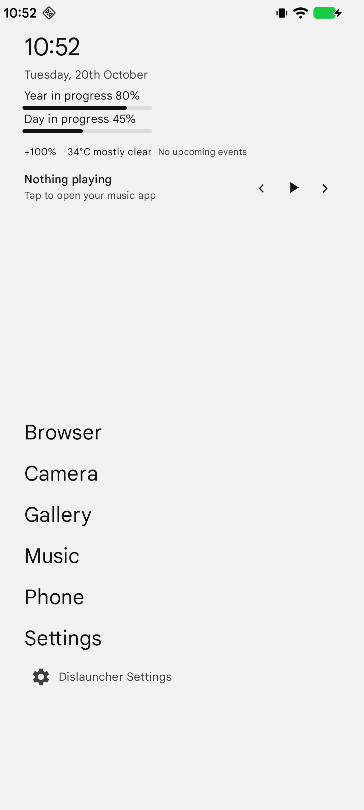
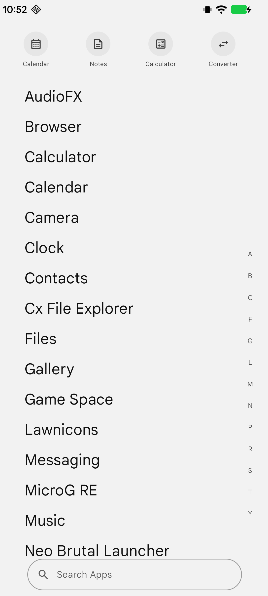
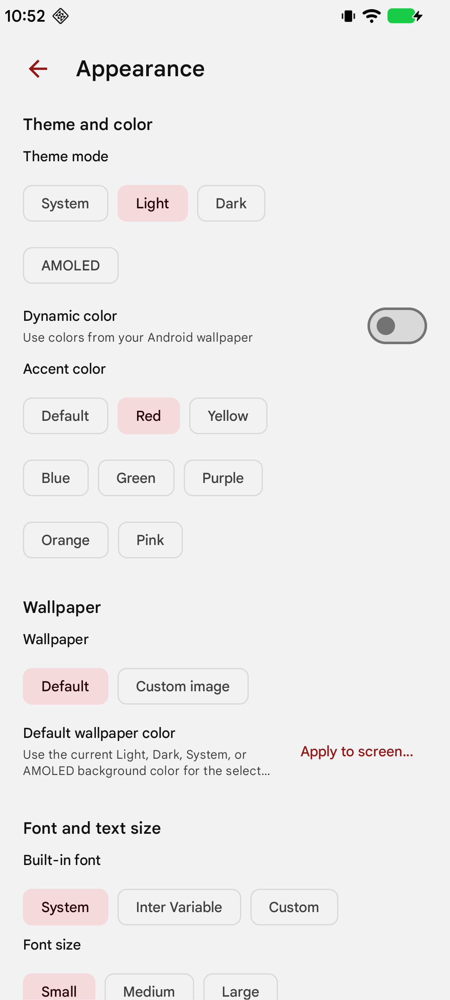
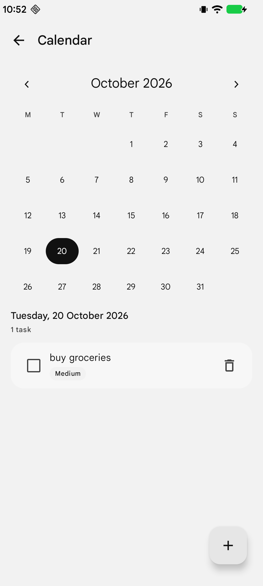
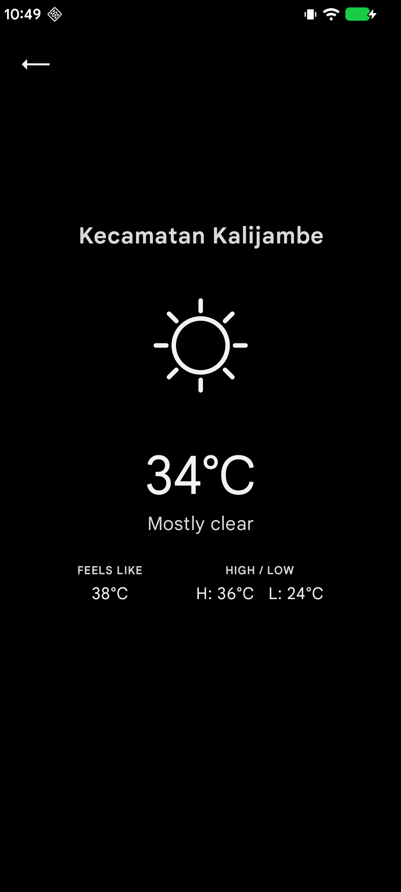

Useful, not crowded
Clock, date, day and year progress, favourite apps, and optional widgets for weather, battery, calendar agenda, music, and notification dots. Choose which supported elements appear and reorder them.
A text-first Android launcher
Dislauncher keeps your Home screen calm and useful. See the time, reach your apps quickly, and make the experience your own—without turning your phone into another feed.
Open source · Android 8.0 and later · No account required

A look at the current app, using screenshots from this repository—not concept mockups.





The essentials stay close, with optional tools and appearance controls that let you choose how much you want on screen.
Clock, date, day and year progress, favourite apps, and optional widgets for weather, battery, calendar agenda, music, and notification dots. Choose which supported elements appear and reorder them.
Search installed apps, browse alphabetically, and optionally use an A–Z index. Manage favourites, hide apps, choose icon visibility and shape, or use a compatible third-party icon pack.
Choose System, Light, Dark, or Black appearance, with optional Android Dynamic Color and accent presets. Set a solid-colour or custom wallpaper, adjust drawer transparency, and customize fonts and text size.
Use the built-in Calendar, Notes, Calculator, Unit Converter, Weather, and supported music controls without adding another app to your Home screen.
Your Home screen should help you get to life—not keep you looking at your phone.
Dislauncher is an independent project built around a simple idea: a launcher can be functional without being noisy. Text-first navigation keeps apps easy to find, while optional features let you decide what belongs on your screen.
Permissions for features such as location, calendar, notifications, and double-tap-to-lock are optional. You can use the basic launcher without granting every special access.
Read the privacy notes ↗A personal open-source project shared publicly with its source and release builds.
Supports Android API 26 and later.
Built with Material 3 and the Android SDK.
Download the APK from the project's official releases page.
Ready when you are
Get the latest release, explore the source, or report an issue on GitHub.